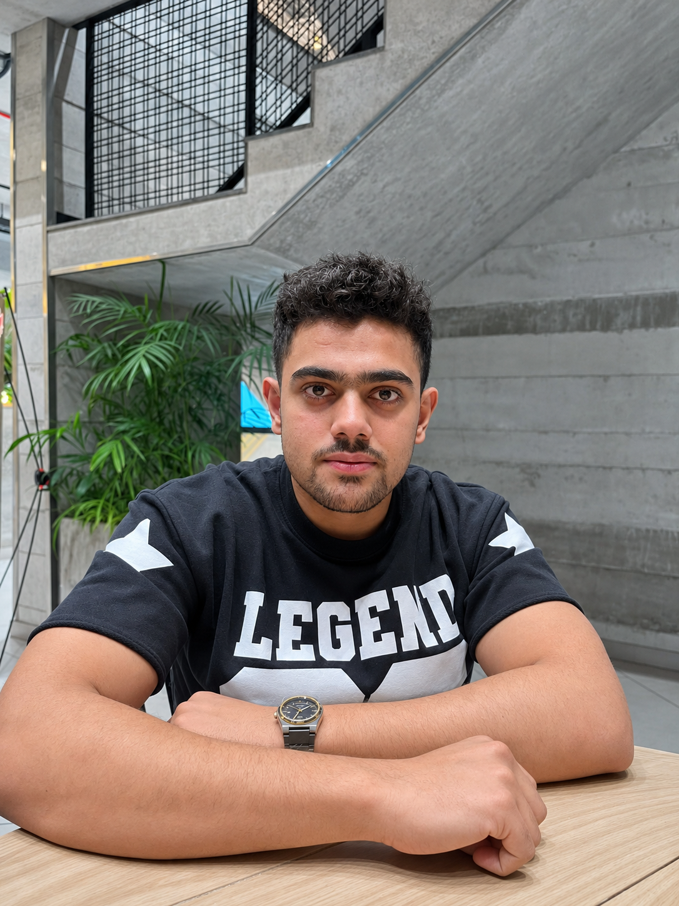

SOFTWARE ENGINEER · AI BUILDER · ENTREPRENEUR
Building intelligent
systems for
what’s next.
I'm Saad Faisal Qureshi. I explore AI, build intelligent agents, automate workflows, and turn ideas into working products.

Code. Creation.
01 / THE PERSON BEHIND THE WORK
Curious about technology.
Driven by building.
I'm a Software Engineering student at COMSATS University Islamabad, Lahore Campus, exploring how AI agents, LLMs, and intelligent automation can transform software and business.
As Founder & CEO of Sanestix, I work on software solutions, AI-powered products, and automation initiatives. I also manage Fintoku and Gardener Stories, and support practical AI education through Sanestix Academy.
“I don't just study technology. I build products, businesses, and intelligent systems with it.”
02 / VENTURES & ENTREPRENEURSHIP
Building beyond
the classroom.
03 / AN EVER-EVOLVING CURIOSITY
Where my
curiosity lives.
04 / PROJECT DIRECTIONS
Ideas into possibilities.
Concepts to explore. Implementation and public demos are not yet verified.
05 / EXPERIENCE & EDUCATION
Learning.
Leading.
Building.
06 / LEARNING TOOLKIT
Tools & technologies.
An evolving learning toolkit; proficiency to be confirmed.
07 / RESEARCH & NOTES
Exploring
what’s next.
I'm interested in how AI can move beyond question-answering to understand objectives, interact with environments, learn from feedback, and execute complex tasks.
Notes from my learning journey
Future writing on practical agents, business automation, startup lessons, and software engineering will live here. No articles or research papers published here yet.
08 / START A CONVERSATION
Have an idea?
Let’s build something.
Let’s connect around AI, software, research, and technology-driven businesses.
SaadFaisalQureshi@gmail.com ↗